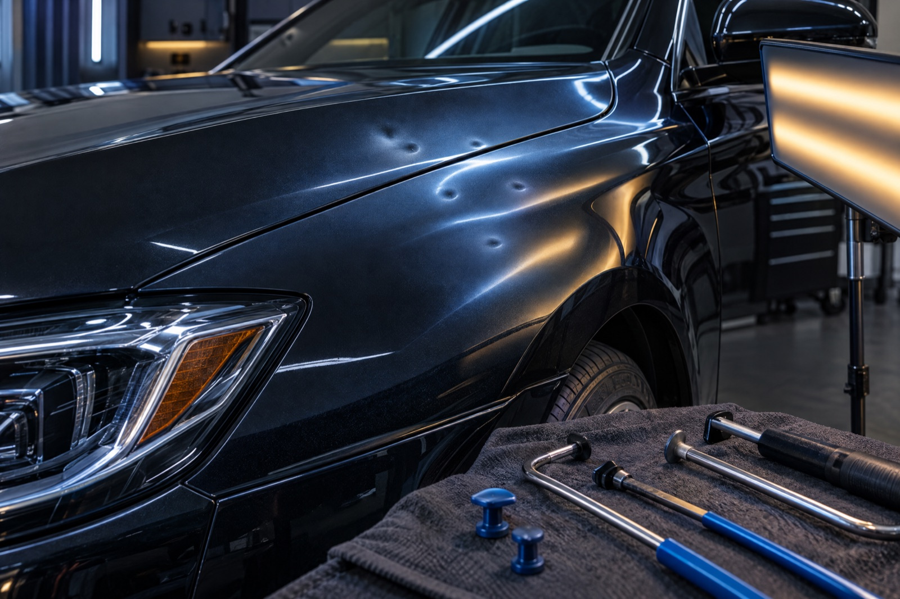

01
Original paint intact
PDR is often considered when the paint surface is not cracked, torn or otherwise compromised.

Paintless Dent Removal / Fremont
For eligible dents, PDR can carefully reshape the panel without defaulting to filler, paint or conventional bodywork.
What it is
Paintless dent removal is a specialized technique that uses controlled pressure, access and reflected light to guide a dented panel back toward its intended shape while retaining the original painted surface when conditions allow.
The reflection board is not decoration. It makes subtle changes in the panel visible so each adjustment can be judged as the work progresses.

When it can work
Suitability depends on paint condition, panel material, dent depth, location, body-line involvement and the access available behind the panel.
PDR is often considered when the paint surface is not cracked, torn or otherwise compromised.
Tool access behind the panel, or a controlled approach from the face of the dent, affects feasibility.
Shallow dents and certain panel contours may be more suitable than sharply stretched or complex damage.
When paint is damaged, the metal is severely stretched, or the dent is inaccessible, another repair path may be more appropriate.
Our Process
Look at paint condition, panel contour, depth and the area around the dent.
Identify the cleanest practical route to the affected area and the tool or method that fits it.
Use reflected lines and gradual movement to correct the panel in controlled increments.
Reassess the surface, transitions and visual result before handoff.
PDR vs. conventional body shop
This is a general comparison, not a promise that one method is appropriate for every vehicle or dent.
| Consideration | Paintless Dent Removal | Traditional body repair |
|---|---|---|
| Original paint | May be retained when the surface is intact and the dent is suitable. | Often involves refinishing the affected area after repair. |
| Repair approach | Focused panel reshaping using specialized access and reflection control. | May use conventional pulling, filler, preparation and paint work. |
| Best fit | Eligible dents with intact paint and practical access. | Paint damage, severe stretching, corrosion, collision damage or unsuitable access. |
| Evaluation | Condition, location and panel structure are reviewed before proceeding. | Damage extent, paint system and structural requirements are reviewed before proceeding. |

Start with photos